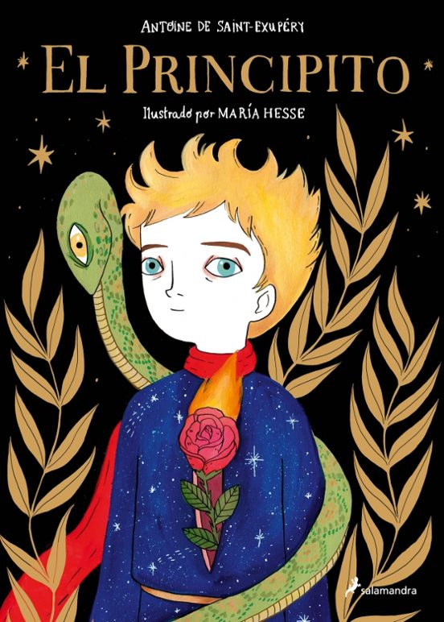
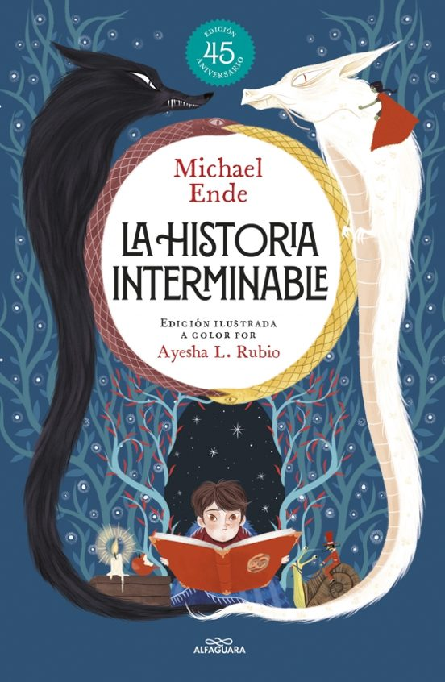

Mis libros recomendados
Aquí encontrarás algunos de los libros que más me han gustado.
Cada uno tiene una pequeña descripción para que conozcas de qué trata.

El principito
Antoine de Saint-Exupéry
Un clásico que nos recuerda la importancia de la amistad y de ver mas allá de las apariencias.
Más información
Harry Potter y el misterio del Príncipe
J. K. Rowling
El comienzo de una aventura llena de magia, amistad y grandes sorpresas.
Más información
La historia interminable
Michael Ende
Un viaje fascinante a un mundo de Fantasíadonde la imaginación no tiene límites.
Más informaciónOtros libros que tambien te pueden gustar
- Momo – Michael Ende
- Las crónicas de narnia - C. S. Lewis
- Obras Completas Sherlock Holmes - Arthur Conan Doyle
- El Hobbit - J. R. R. Tolkien
- La Noche a Través del Espejo – Fredric Brown